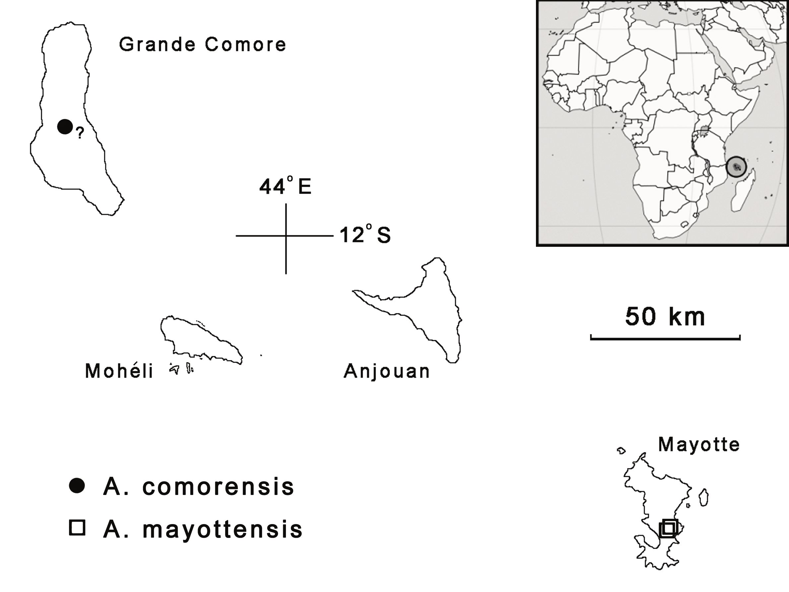
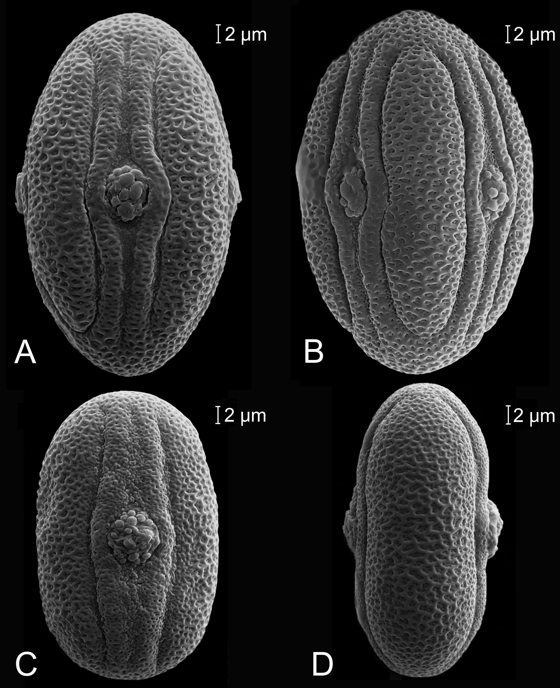

Full text is available as a scanned copy of the original print version.
Get a printable copy (PDF file) of the
complete article, or click on a page image below to browse page by page.
Links are also available for
Selected References.
Images in this article

Fig. 1 – Comoros Archipelago (Union of the Comoros and Mayotte) showing distributions of Anisotes comorensis (Lindau) T. F. Daniel and A. mayottensis T. F. Daniel. The exact location of the sole collection of A. comorensis (Lindau) T. F. Daniel from Grande Comore is unknown.

Fig. 2 – Pollen of Anisotes Nees in the Comoros Archipelago. A-B. Anisotes mayottensis T. F. Daniel ; C-D. A. comorensis (Lindau) T. F. Daniel ; A. Apertural view ; B. Interapertural view ; C. Apertural view ; D. Interapertural view.